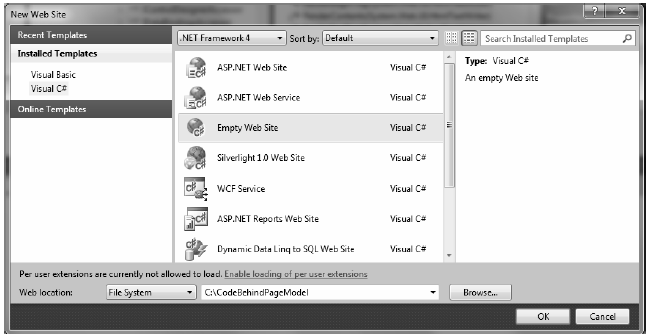
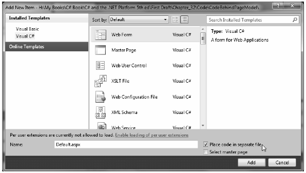
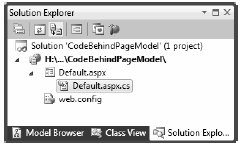
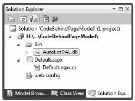
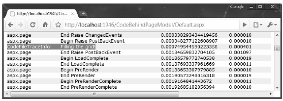

While the single file code model can be helpful at times, the default approach taken by Visual Studio 2010 (when creating a new web project) is to make use of a technique known as code-behind, which allows you to separate your programming code from your HTML presentation logic using two distinct files. This model works quite well when your pages contain a significant amount of code or when multiple developers are working on the same website. The code-behind model offers other benefits as well:
Regardless of which approach you take, there is no difference in terms of performance. In fact, many ASP.NET web applications will benefit from building sites that make use of both approaches.
To illustrate the code-behind page model, let’s recreate the previous example using a blank Visual Studio 2010 Web Site template (note that Visual Studio 2010 is not required to build pages using codebehind). Activate the File > New > Web Site menu option and select the Empty Web Site template, as shown in Figure 32-16.
Figure 32-16 The Empty Web Site template
Notice in Figure 32-16 that you are able to select the location of your new site. If you select File System, your content files will be placed within a local directory and pages will be served via the ASP.NET development web server. If you select FTP or HTTP, your site will be hosted within a new virtual directory maintained by IIS. For this example, it makes no difference which option you select, but for simplicity I suggest selecting the File System option and specifying a new folder named C:\CodeBehindPageModel.
Note The Empty Web Site project template will automatically include a web.config file, which is similar to an App.config file for a desktop executable. You’ll learn about the format of this file later in the chapter.
Now, using Website > Add New Item... menu option, insert a new Web Form item named Default.aspx. You’ll notice that, by default, the Place code in separate file checkbox is checked automatically, which is exactly what you want (Figure 32-17).
Figure 32-17 Inserting a new Web Form with code separation
Once again, make use of the designer to build a UI consisting of a Label, Button, and GridView, and make use of the Properties window to build a UI of your liking.
Note that the <%@Page%> directive has been updated with a few new attributes:
<%@ Page Language="C#" AutoEventWireup="true"
CodeFile="Default.aspx.cs" Inherits="_Default" %>
The CodeFile attribute is used to specify the related external file that contains this page’s coding logic. By default, these code-behind files are named by adding the suffix .cs to the name of the *.aspx file (Default.aspx.cs in this example). If you examine Solution Explorer, you will see this code-behind file is visible via a subnode on the Web Form icon (see Figure 32-18).
Figure 32-18 The associated code-behind file for a given *.aspx file
If you were to open your code-behind file, you would find a partial class deriving from System.Web.UI.Page with support for handling the Load event. Notice that the name of this class (_Default) is identical to the Inherits attribute within the <%@Page%> directive:
public partial class _Default : System.Web.UI.Page { protected void Page_Load(object sender, EventArgs e) { } }
As previously mentioned, when creating web application projects using Visual Studio 2010, you do not need to manually build a \bin subdirectory and copy private assemblies by hand. For this example, activate the Add Reference dialog box using the Website menu option and reference AutoLotDAL.dll. When you do so, you will see the new \bin folder within Solution Explorer, as shown in Figure 32-19.
Figure 32-19 Visual Studio typically maintains special ASP.NET folders
Handle the Click event for the Button type by double-clicking the Button placed on the designer. As before, the Button definition has been updated with an OnClick attribute. However, the server-side event handler is no longer placed within a <script> scope of the *.aspx file but as a method of the _Default class type.
To complete this example, add a using statement for AutoLotConnectedLayer inside your codebehind file and implement the handler using the previous logic:
using AutoLotConnectedLayer; public partial class _Default : System.Web.UI.Page { protected void Page_Load(object sender, EventArgs e) { } protected void btnFillData_Click(object sender, EventArgs e) { InventoryDAL dal = new InventoryDAL(); dal.OpenConnection(@"Data Source=(local)\SQLEXPRESS;" + "Initial Catalog=AutoLot;Integrated Security=True"); carsGridView.DataSource = dal.GetAllInventory(); carsGridView.DataBind(); dal.CloseConnection(); } }
At this point, you can run your web site by pressing the Ctrl+F5 key combination. Once again, the ASP.NET development web server will fire up, serving your page into your hosting browser.
The compilation process of a page making use of the code-behind model is similar to that of the singlefile model. However, the type deriving from System.Web.UI.Page is composed of three files rather than the expected two.
Recall that the Default.aspx file was connected to a partial class named _Default within the codebehind file. In addition, a third aspect of the partial class generated in memory, which contains inmemory code that correctly sets properties and events on your web controls.
In any case, once the assembly has been created upon the initial HTTP request, it will be reused for all subsequent requests, and thus will not have to be recompiled. Understanding this factoid should help explain why the first request of an *.aspx page takes the longest and subsequent hits to the same page are extremely efficient.
Note Under ASP.NET, it is possible to precompile all pages (or a subset of pages) of a website using a command-line tool named aspnet_compiler.exe. Check out the .NET Framework 4.0 SDK documentation for details.
When you are building ASP.NET web projects, you can use the same debugging techniques as you would with any other sort of Visual Studio 2010 project type. Thus, you can set breakpoints in your codebehind file (as well as embedded “script” blocks in an *.aspx file), start a debug session (via the F5 key, by default), and step through your code.
However, to debug your ASP.NET web applications, your site must contain a properly configured Web.config file. By default, all Visual Studio 2010 web projects will automatically have a Web.config file. However, debugging support is initially disabled (as debugging would degrade performance). When you start a debugging session, the IDE will prompt you whether you would like to modify Web.config to enable debugging . Once you have opted to do so, the <compilation> element of the Web.config file is updated like so:
<compilation debug="true" targetFramework="4.0"/>
On a related note, you are also able to enable tracing support for an *.aspx file by setting the Trace attribute to true within the <%@Page%> directive (it is also possible to enable tracing for your entire site by modifying the Web.config file):
<%@ Page Language="C#" AutoEventWireup="true"
CodeFile="Default.aspx.cs" Inherits="_Default" Trace="true" %>
Once you do, the emitted HTML contains numerous details regarding the previous HTTP request/response (server variables, session and application variables, request/response, etc.). To insert your own trace messages into the mix, you can use the Trace property inherited from System.Web.UI.Page.
Anytime you wish to log a custom message (from a script block or C# source code file), simply call the static Trace.Write() method. The first argument represents the name of your custom category, the second argument specifies the trace message. To illustrate, update the Click handler of your Button with the following code statement:
protected void btnFillData_Click(object sender, EventArgs e) { Trace.Write("CodeFileTraceInfo!", "Filling the grid!"); ... }
Run your project once again and click the button. You will find your custom category and custom message are present and accounted for. In Figure 32-20, take note of the highlighted message that displays the trace information.
Figure 32-20 Logging custom trace messages
At this point, you have seen how to build a single ASP.NET web page using the single-file and codefile approach. The remaining topics of this chapter will take a deeper look into the composition of an ASP.NET web project, as well as ways to interact with the HTTP request/response and the life cycle of a Page derived class. Before you dive in, I need to clarify the distinction between an ASP.NET Web Site and an ASP.NET Web Application.
Source Code The CodeBehindPageModel website is included under the Chapter 32 subdirectory.